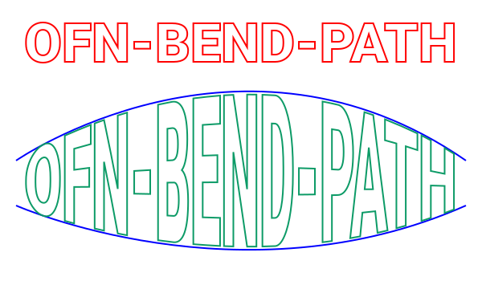
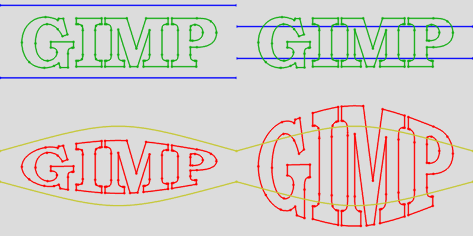
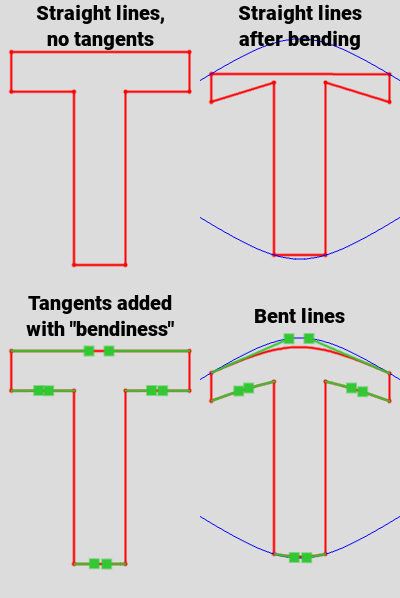

This script bends a path using the strokes of another path as an envelope.
It can be seen as an equivalent of the "Curve Bend" tool. Unlike other scripts
with the same purpose, this script only remaps the path control points and does not
create new ones (it may move a few, see Bendiness below).
The script is called by right-clicking the path to bend in the Paths dialog and clicking Tools>Bend....

Conceptually, in addition to the source path (green) and the envelope path (yellow), you define two horizontal reference lines (blue). Space (and the source path on it) is then stretched vertically to fit these two reference lines over the envelope lines. The final result (red) depends on the position of these lines with regard to the source path:

Envelope pathThe path with the two strokes that define the envelope. Stroke order and direction is indifferent. In addition to the position and size requirements mentioned, some restrictions apply:
BendinessThe amount of artificial bend to apply to straight path segments.
In Gimp paths, straight path segments are created by having the tangent control points exactly over the anchors. So, in the result path, these points are mapped to identical points, are therefore are still overlapping and the result is still a straight line, which may not look good. To avoid this, the script moves the tangent points somewhere between the two anchors, so that the remapping naturally transforms the straight line into a curve. Note however that this curve cannot be exactly the same as the one you would get by interpolating intermediate points (even if it will be close). Bendiness above 100% may generate loops and cusps, so use with caution.

Reference linesThe vertical coordinates of the two reference lines.
The options are:
Best fit: the script computes the maximum and minimum Y coordinates for the source path. The net effect
is that the limits of your path will be very close to the envelope. However:
O,C, G...) may extend slightly below the baseline so the baseline will
not map to the lower envelope limit.Guides: the script expects to find exactly two horizontal guides, whose position will be usedExplicit values: the script uses the values entered in the two fields belowTop coordinate, Bottom coordinateThe positions of the reference lines when using Explicit values in Reference lines